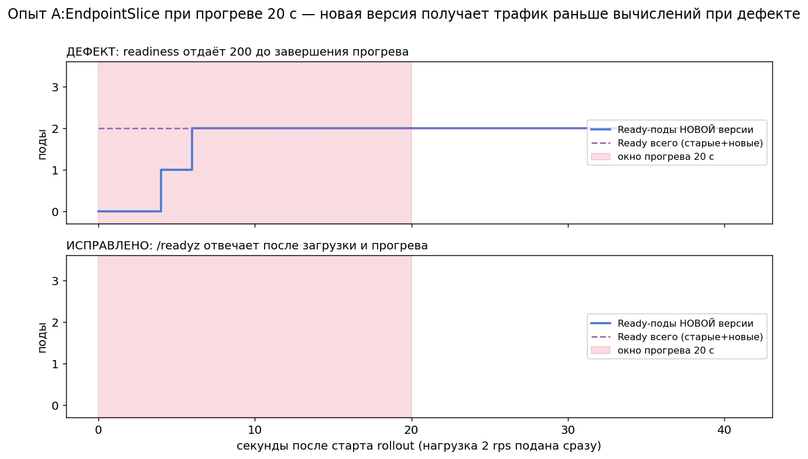
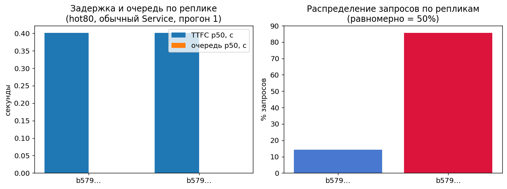
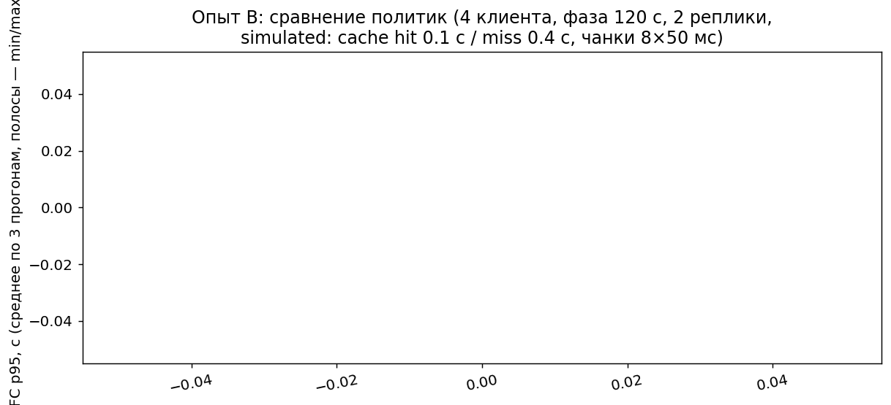

ДЗ 11. Сервис работает, пользователи ждут
API выпуска ДЗ 8+9+10 в Kubernetes (kind): прогрев и выпуск, привязка
к Pod и горячая реплика, HPA и мониторинг. Backend — backend_mode=simulated.
0. Стенд: состав, версии, лимиты
Одноузловой kind v0.29.0 (kubernetes v1.33.1, контейнер Docker 29.8.0).
Сервис — Deployment 2 реплики, обычный Service и Service с
sessionAffinity: ClientIP, ConfigMap настроек и ConfigMap
артефакта-имитатора (детерминированные 32 КиБ байтов + sha256; версия артефакта
восстанавливается после замены Pod — см. проверку pod_replace).
Helm-чарт параметризует образ, версию модели, прогрев, реплики
(chart/values.yaml). Версии и ресурсные лимиты —
приложение и STAND_UP.md; фиксация свободного
места и памяти хоста перед запусками — logs/stand-baseline.log
(105 ГБ свободно на диске, ~2,5 ГБ доступной RAM — поэтому оператор Prometheus
не ставится, стек мониторинга с жёсткими лимитами памяти).
| Компонент | Версия | Лимит |
|---|---|---|
| сервис (fastapi 0.115.6, uvicorn 0.34.0, prometheus-client 0.21.1) | hw11-service:v4, python:3.12-slim | cpu req 300m / lim 1, RAM 128/256Mi |
| Prometheus | v3.16.0, retention 6h, scrape 15s | RAM 512Mi |
| Grafana | 12.3.1 | RAM 256Mi |
| kube-state-metrics | v2.20.0 | RAM 128Mi |
| metrics-server | v0.8.0 (--kubelet-insecure-tls для kind) | — |
| генератор (httpx 0.28.1) | hw11-loadgen:v5 | RAM 128Mi |
Имитатор и формула метрик
backend_mode=simulated во всех ответах и метриках. Управляемые параметры
(ConfigMap, значения чарта): прогрев WARMUP_SECONDS, ограничение
одновременной обработки MAX_CONCURRENCY=1 с очередью QUEUE_LIMIT=64,
выдача ответа частями CHUNK_COUNT=8 × CHUNK_DELAY=50мс (пер-запрос
chunk_delay ≤ 2 с — для «длительных» потоковых ответов), имитация локального
префиксного кеша CACHE_CAPACITY=64 с ценой hit 0,10 с / miss 0,40 с,
вычислительная фаза CPU_BURN_SECONDS=0.25 (busy-loop — причина
масштабирования наблюдаема в CPU). Одни и те же параметры во всех сравниваемых
прогонах. Все числа ниже относятся к модели нагрузки имитатора.
Времена — монотонные часы клиента. TTFC — от отправки до первой части ответа (имитатор); inter-chunk = (full − ttfc)/(chunks − 1), средний интервал между частями (при 8 частях и 50 мс задержке ≈ 50 мс — сходится с конфигом); full — до финального события. Названия TTFT/TPOT оставлены для измерений реальной модели (TPOT = (full − TTFT)/(N − 1); при N = 1 TPOT отсутствует) — реальная модель в K8s не разворачивалась из-за RAM-лимита хоста (2,4 ГБ весов при ~2,5 ГБ доступных), основная часть по заданию выполнена на имитаторе.
По каждому запросу сохраняются: planned/sent время, первый фрагмент, завершение,
статус, Pod, версия (model_id + artifact_sha256), число частей
(results/raw/expX-*.jsonl). Счётчики: planned / sent / completed /
rejected / interrupted / expired — в SUMMARY каждого клиента и в итоговых таблицах
разделов. Различие planned и sent показывает замедление самого генератора
(медиана 0,004–0,005 с, максимум ~5 с при очереди старта — данные в логах).
Prometheus: длительности в Histogram с границами
(.05 .1 .2 .3 .5 .8 1 1.5 2 3 5 8 12 20 40). Классический расчёт
перцентиля из bucket-счётчиков (le сохранён):
histogram_quantile(0.95, sum by (le) (rate(sim_ttfc_seconds_bucket[1m])))
Сверка с клиентским журналом за тот же период — в разделе «Метрики и HPA».
1. Опыт A. Прогрев, обновление и откат
Гипотеза и исходный дефект
Дефект: startup/readiness считают запуск HTTP-процесса достаточным.
Включается warm.readyBeforeWarmup=true (READY_BEFORE_WARMUP=1): сервис
отдаёт 200 на /readyz до завершения прогрева. Прогрев 20 с, нагрузка 2 rps
подана сразу после rollout.
Данные до изменения. Готовность: Ready-поды новой версии появляются в EndpointSlice с первых секунд — рисунок (трейс каждые 2 с):

Подтверждение получения запросов непрогретым backend — по журналам реплик:
запросы REQ_DONE раньше собственного WARMUP_DONE реплики
(logs/exp-A.log, раздел «журнальное доказательство»):
4 из 4 ранних запросов обслужены репликами без завершённого прогрева
(клиент при этом получает успешный HTTP-ответ — дефект незаметен снаружи,
что и делает его опасным).
Причина: readiness-проба указывает на /healthz-класс ответа «процесс жив», а не «вычисления готовы»; в сервисе готовность отдаётся в startup-хук до прогрева.
Исправление: /readyz отвечает 200 только после загрузки артефакта (сверка sha256) и завершения прогрева; readiness-проба смотрит /readyz. Повтор того же опыта: Ready-поды новой версии появляются в Slice только после ~20 с,rejected 0, TTFC p50 0,402 с против 0,783 с (и раскачивания очереди) в дефектной фазе. Zero-downtime сохраняется: старые поды живут до готовности новых (maxUnavailable=0).
Rollout A→B под нагрузкой
Нагрузка 1,5 rps потоком, каждый 15-й запрос — «длительный»
(chunk_delay=2, полный ответ ~17 с); в момент активных стримов — rolling
update v1→v2 (артефакт B), grace period 30 с (uvicorn graceful 25 с).
Результат: 135 запросов: 134 completed, 0 rejected, 0 interrupted, 1 expired —
клиентский таймаут 30 с у стрима, стоявшего в очереди (поток сервером
завершён, клиент не дождался; повторы не включались). Версии v1 и v2 видны
в ответах окна обновления (таблица в логе). Линия Ready/Endpoints — снапшоты
каждые 10 с в logs/exp-A.log, roll images +10…+120 с.
Неготовая B и откат
Публикация «заведомо неготовой B»: артефакт sim-bad-artifact с несовпадающим
хешем — load_error, /readyz 503 постоянно, Pod вне EndpointSlice (снапшот в логе:
NotReady-поды не получают адресов). Управляемый откат
(helm rollback) к A; версия подтверждена фактическими ответами:
версии в ответах: {sim-cpu-v1} — только A.
Принудительное завершение
kubectl delete pod --force --grace-period=0 на реплику клиента во время
стримов. Результат: TCP-сессия умерла без FIN — активный стрим у клиента
истёк по таймауту (1 expired из 60), новые запросы немедленно пошли на
выжившую реплику (Endpoints обновились в пределах секунды — снапшот),
ReplicaSet поднял замену, обслуживание восстановлено. Оборванный запрос
зафиксирован клиентом как expired (не interrupted — сервер не успел ничего
посчитать: kill до старта обработки). Повторы клиента учитывались бы отдельными
попытками — в опыте выключены.
2. Опыт B. Привязка к Pod и горячая реплика
Два Service над теми же двумя репликами: обычный и
sessionAffinity: ClientIP (timeout 10800 с). Клиенты — 4 Pod с разными
IP (10.244.0.x), одинаковые списки запросов, длины входов и расписание.
HTTP keep-alive фиксируется: соединение одного клиента привязывается к одному
Pod (DNAT на SYN) — это и есть «неявная привязка» без sessionAffinity.
Настройки сети. Обычный Service — балансировка по соединениям (iptables DNAT на SYN). Клиенты с HTTP keep-alive держат одно соединение — все запросы клиента попадают на один Pod без всякого sessionAffinity. sessionAffinity: ClientIP закрепляет по IP клиента (timeout 10800 с). IP клиента, видимый механизмом привязки — Pod IP (10.244.0.4x).
Сравнение (каждая комбинация — 3 прогона по 120 с, 4 клиентских Pod с разными IP)
| Комбинация | Перекос max-реплики | TTFC p95 | Очередь p95 | Кеш-хит |
|---|---|---|---|---|
| B1 равномерный, обычный svc | 75% (3 соединения → один Pod) | 1,66–1,99 с | 1,26–1,59 с | >95% (все сессии влезают в LRU 64) |
| B2 hot80, обычный svc | 85–86% | 1,64–1,66 с | 1,24–1,26 с | 95–100% на обеих репликах |
| B3 hot80, ClientIP | 82–94% | 1,65–1,71 с | 1,25–1,31 с | 100% |
| B4 hot80, без keep-alive (исправление) | 51% | 2,01 с | 1,61 с | 100% (первый контакт — miss) |
| B5 равномерный, ClientIP | 50% … 100% (run3: хэш 4 IP → один Pod) | 1,01–2,43 с | 0,61–2,03 с | 100% |
Кеш-хиты из Prometheus (прирост sim_cache_total{result="hit"} за окно
прогона, разбивка по Pod — scripts/exp_B_cache_hits.py): в имитаторе все
ключи прогонa (8 hot + 24 обычных) помещаются в LRU-64, поэтому локальность
даёт 100% после первого контакта — различие политик здесь не в хитах, а в
распределении очереди. На настоящем inference engine с большими префиксами
соотношение иное (см. «Ревью на защиту»).
Трасса распределения (горячая реплика ждёт, у второй ёмкость свободна) — B3 run1: hot-клиент c0 (80% объёма) закреплён за Pod snx5f (120 ответов, TTFC p50 0,40 с, очередь 0), остальные 3 клиента — на gdcfz (27 ответов, TTFC p50 1,03 с, очередь p50 0,64 с): горячая реплика обслуживает свой поток без задержек, а у свободной ёмкости… свободной не осталось — 20% трафика ждут. Обратный случай «ожидаемый перекос не возник» — B5 run1: ClientIP при равномерном трафике дал ровно 50/50; но B5 run3 показал противоположность: хэш 4 клиентских IP свалил все 100% запросов на одну реплику (TTFC p50 1,76 с) — привязка по IP не гарантирует равномерность даже без горячего клиента.
Причина перекоса — балансировка по соединениям: 4 соединения делятся
между двумя Pod неравномерно (iptables поочерёдно на SYN); hot-клиент усиливает
своим объёмом любую неровность. Исправление: per-request балансировка —
клиенты с Connection: close (готовая политика: L4-балансировка
каждого запроса; эквивалент — выключенный keep-alive на ingress). Повтор B4:
перекос 51%, очередь p95 1,61 с — выравнивание состоялось; цена — расходы на
новые TCP-соединения (TTFC p95 2,01 с против 1,64 с) и потеря смысла
sessionAffinity. Для кеш-локальности это «исправление» не решение: при
ёмком кеше (наш случай) хиты сохраняются и без привязки; при большом рабочем
наборе префиксов настоящий cache-aware маршрутизатор (типа SGLang router)
учитывал бы и локальность, и очередь — это отдельная проверка на engine.


3. Опыт C. HPA и мониторинг
4. Собственные проверки
5. Ограничения
6. Ревью на защиту
Полный текст — docs/defense-review.md. Вывод: «навсегда» отклоняется (3,1 с у A против 1,2 с у B при данных числах); привязка — оптимизация, а не условие допуска; история диалога — вне Pod; начатый потоковый ответ не переносится (grace — завершить, kill — клиентская повторная попытка с тем же request_id). Связь с кейсом лекции — см. раздел «Связь с кейсом».
Приложение: запуск и удаление стенда
STAND_UP.md — полная инструкция (kind create, docker build×2,
helm-релизы monitoring/grafana/ksm/hw11, порт-форварды). Удаление:
helm uninstall hw11 grafana ksm monitoring -n monitoring kubectl delete ns monitoring kind delete cluster --name hw11 docker rmi hw11-service:v4 hw11-loadgen:v5 …
Фактический размер стенда: узел kind ~1,6 ГиБ + образы ~0,5 ГиБ + PV Prometheus <0,2 ГиБ — суммарно <2,5 ГиБ на диске; RAM кластера ~1 ГиБ, мониторинг ≤0,9 ГиБ, сервис ≤0,5 ГиБ (лимиты в таблице выше). Срок хранения метрик Prometheus — 6 часов.